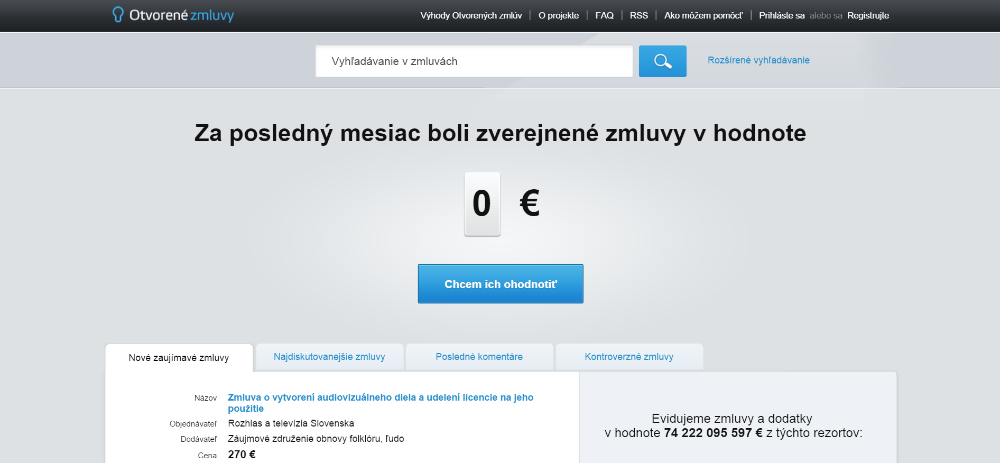

Open Contracting And Procurement In Slovakia
Establishing Trust in Government through Open Data
by Ali Clare, David Sangokoya, Stefaan Verhulst and Andrew Young*
Impact
Sector
Location
IMPROVING GOVERNMENT
PUBLIC SECTOR
SLOVAKIA
Read Time
Brief View 5 MINS
Full Story 20 MINS
The results of Slovakia’s transparency legislation have been striking, affecting a wide range of beneficiaries. Impact can be gauged according to four categories: engagement and use, corruption and perceptions of corruption, citizen awareness and oversight, and regional diffusion.
Intended Beneficiaries
|
Average Citizens |
Legal framework for more efficient and transparent use of taxpayer money Annual use of the platform is at 8 percent of the population, following a reported 11 percent in the first year.3 90,000 “heavy users,” who have checked at least five public documents4 |
|
Business Community and Entrepreneurs |
Business associations (including the U.S. Chamber of Commerce in Slovakia) were largely supportive of the new legislation.5 Legislation is aimed at addressing Slovakia’s difficult business climate: the World Bank’s Ease of Doing Business list places Slovakia in the bottom 100 for four key indicators.6 Prior to the law’s enactment, corruption was identified by businesspeople as the number one barrier to doing business in the country.7 |
|
Media and Watchdog Groups |
Media seen as among biggest supporters and beneficiaries of new law 25 percent increase in stories on procurement in mainstream media Increase in variety and source of “tips” received by journalists as average citizens can now identify instances of possible corruption Overall increase in number of NGOs and scope of work undertaken by watchdog groups as a result of the legislation |
|
3 To arrive at this number, a professional polling company was employed to undertake personal surveys with at least 1,000 people in 2012 (out of a country of 5 million) and their demographics were recorded (age, education and region). A follow up survey was undertaken early this year which showed that annual use is around 8 percent. GovLab interview with Gabriel Sipos, Director of Transparency International, August 4, tan2015. 4 Sipos, Gabriel, Samuel Spac, and Martin Kollarik. “Not in Force Until Published Online: What the Radical Transparency Regime of Public Contracts Achieved in Slovakia.” Transparency International Slovakia. 2015. http://transparency.sk/wp-content/uploads/2015/05/Open-Contracts.pdf. 5 Sipos, Gabriel, Samuel Spac, and Martin Kollarik. “Not in Force Until Published Online: What the Radical Transparency Regime of Public Contracts Achieved in Slovakia.” Transparency International Slovakia. 2015. http://transparency.sk/wp-content/uploads/2015/05/Open-Contracts.pdf. 6 “Doing Business in Slovak Republic.” Doing Business–World Bank Group. 2015. Accessed July 14, 2015. http://www.doingbusiness.org/data/exploreeconomies/slovakia#dealing-with-construction-permits. 7 Kicina qtd. in Furnas, Alexander. “Transparency Case Study: Public Procurement in the Slovak Republic.” Sunlight Foundation Blog. August 12, 2013. http://sunlightfoundation.com/blog/2013/08/12/case-study-public-procurement-in-the-slovak-republic/. |
|
Engagement and Use: Several indicators point to significant use by citizens, journalists and others of both the central register (CRZ) and documents posted at the municipal level. These include:
Contracts Published: Between 2011 and 2014, over 780,000 contracts were published in an open, machine-readable format on the CRZ.14 A further 1.2 million were published by municipal authorities. The largest number of contracts was published by Všeobecná zdravotná poisťovňa, the main state health insurer, followed by RTVS, the national broadcaster, and Národná diaľničná spoločnosť, the state highway operator.15 About one-quarter of the contracts were for amounts higher than 1,000 euros, while 3 percent were for contracts over 100,000 euros.
Citizen Use and Access of Portal: In the years preceding the passage of the new transparency legislation, fewer than 5 percent of citizens used FOI laws to request information from public agencies. According to surveys conducted by Transparency International Slovakia, 11 percent of the population accessed the portal in its first year of existence, followed by an average of 8 percent of the population in the following years.16 Together with otvorenezmluvy.sk, an unofficial open contracts portal run by Transparency International Slovakia and the Fair Play Alliance, the official CRZ portal attracts approximately 54,000 visits a month. Significantly, this figure has increased by a third since 2012, which suggests that citizen awareness and use of the portal data is gaining momentum.

Figure 2: otvorenezmluvy.sk main page
A fuller picture of citizen use can be determined from Google Analytics data, provided by Transparency International Slovakia.17 Although the average visitor to the site spends under two minutes on the site (1m44s), 2 percent of sessions (or 170,000 visitors) spend more than 10 minutes. In addition, 20 percent of visitors are returning ones, indicating the possible existence of a committed group of transparency watchdog groups and individuals. However, Maria Zuffova, a researcher at the Slovak Governance Institute argues that the high level of returning visitors each month could actually point to a high number of individuals working in public institutions visiting the site in an official capacity, such as to upload the contracts and receipts each month.18
Corruption and Perceptions of Corruption
Corruption is notoriously difficult to measure. By its very nature, it is hidden, and so challenging to capture. Nonetheless, a few indicators point to the positive impact of the law. These include:
In the 2014 Corruption Perceptions Index published by Transparency International, Slovakia increased its ranking by six places, to 54. This represented a jump of 12 places since 2011, making Slovakia one of the most improved countries over that period.
Transparency International’s index relies on perceptions of corruption. But some more objective indicators also suggest the law’s impact. For example, while only 2 percent of tenders were conducted electronically prior to the law, almost half are now done that way. In addition to increasing transparency, this has also led to more competitive bidding – an average of one additional bidder per contract, which in turn decreases the contract price by around 2-3 percent.19
The competitiveness of bidding on public contracts can be considered a proxy for corruption. Between 2010 and 2014, the average number of bidders on public procurement contracts more than doubled in Slovakia – from 1.6 companies to 3.7 companies.
The European Research Centre for Anti-Corruption and State Building (ERCAS), citing studies conducted by the Sunlight Foundation, concluded in 2013 that “overall, the Slovakian case supports the idea that transparency may be necessary, but not sufficient, to fight corruption effectively.” The ERCAS identifies areas of progress as a result of the new legislation, but also cites compliance and implementation (subjects we discuss below) as areas of remaining concern.20
Citizen Awareness and Oversight
Making available information on procurement is only a first – if important – step. The impact of Slovakia’s reforms will ultimately be determined by the extent to which citizen and civil society groups use that information to enforce accountability on their leaders. In this regard, early indications are encouraging. Media reporting on procurement has increased substantially since the passage of reforms (by 25 percent over the last four years, according to one report21), and Slovakia has also witnessed a noticeable increase in activity by watchdog groups and NGOs that work to limit corruption. As Eva Vozárová from the Fair Play Alliance notes: “Accessing contracts has become a normal source for journalists and civil society groups.”22
The transition away from a transparency-by-demand approach to transparency by default has had a particularly powerful effect on the way citizens and watchdog groups identify instances of corruption. Previously, corruption had to be proactively identified through FOI requests, often by individuals or groups who had a certain amount of pre-existing knowledge. Under the new system, however, corruption can be more “passively” identified, for example by citizens who happen to notice apparent irregularities while perusing contracts online. This has led to a far greater number of tips, often passed on by ordinary citizens to journalists, who in turn investigate and call for accountability.
Overall, there has been a move toward what one report calls a more “diffuse knowledge”23 – a greater number of actors, from a greater diversity of backgrounds, is involved in policing corruption. This diffusion of oversight, away from a select group of corruption fighters to the citizenry at large, is perhaps one of the most important impacts of Slovakia’s 2011 transparency reforms.
Regional Diffusion
As with many of the case studies examined in this series, the success of this particular open data effort is also indicated by its regional impact. Slovakia’s transparency reforms have been widely hailed as models for Europe and beyond. While it is difficult to assess whether an idea is being explicitly emulated, or if an idea’s time has simply arrived, many of the specific steps included in those reforms are occurring in neighboring states:
In August 2011, Slovenia passed legislation making it mandatory to publish certain types of procurement contracts. According to the Slovenian Government Commission for Prevention of Corruption, this legislation was, as in Slovakia, a direct result of political frustration with corruption, particularly at the level of government contracts and tenders. Moreover, such frustration had been legitimized in 2010 by a government analysis of Public Payments Administration data that revealed high levels of corruption.
The outcome of this legislation was a portal called Supervizor, which provides information on the business transactions of public sector bodies, including legislative, judicial and executive entities; community-level agencies; public institutes and more. The project was developed by the Commission for the Prevention of Corruption of the Republic of Slovenia and partners in the Slovenian Ministry of Finance, the Public Payments Administration of the Republic of Slovenia and the Agency of the Republic of Slovenia for Public Legal Records and Related Services.24 The portal at present contains data going back to 2003 (just prior to Slovenia’s joining the EU) and indicates various types of information, including that on contracting parties and larger recipients of funds. Data is available in graph or printout form for specified time periods.25 Its content has been described by one reporter as “a breath of fresh air.”26

Figure 3: Supervizor main page
In 2015, the Czech Republic passed a similar amendment to its Act on Public Contracts, as well as a Decree on Publication of Notifications, which is believed to be based, at least in part, on the Slovak law. These laws define new guidelines for state contract tender auctions, and all signed contracts for a certain portion of responsible subcontractors must be released to the public. Contract information is now required to be published on the nation’s procurement data portal, Věstník Veřejných Zakázek.27 The Government of the Czech Republic has identified “the computerization of invoices in the state sector and the transparent disclosure of expenditure paid from taxpayers’ money, including small-scale contracts” as among its key priorities. 28
Read MoreLearn about our methodology
Reference
1 Sipos, Gabriel. “Once Riddled with Corruption, Slovakia Sets a New Standard for Transparency.” Open Society Foundations. June 2, 2015. http://www.opensocietyfoundations.org/voices/once-riddled-corruption-slovakia-sets-new-standard-transparency.
2 Furnas, Alexander. “Transparency Case Study: Public Procurement in the Slovak Republic.” Sunlight Foundation Blog. August 12, 2013. http://sunlightfoundation.com/blog/2013/08/12/case-study-public-procurement-in-the-slovak-republic/.
3 Sipos, Gabriel. “Once Riddled with Corruption, Slovakia Sets a New Standard for Transparency.” Open Society Foundations. June 2, 2015. http://www.opensocietyfoundations.org/voices/once-riddled-corruption-slovakia-sets-new-standard-transparency.
4 Kicina qtd. in Furnas, Alexander. “Transparency Case Study: Public Procurement in the Slovak Republic.” Sunlight Foundation. Sunlight Foundation Blog. August 12, 2013. http://sunlightfoundation.com/blog/2013/08/12/case-study-public-procurement-in-the-slovak-republic/.
5 Furnas, Alexander. “Transparency Case Study: Public Procurement in the Slovak Republic.” Sunlight Foundation Blog. August 12, 2013. http://sunlightfoundation.com/blog/2013/08/12/case-study-public-procurement-in-the-slovak-republic/.
6 Sipos, Gabriel, Samuel Spac, and Martin Kollarik. “Not in Force Until Published Online: What the Radical Transparency Regime of Public Contracts Achieved in Slovakia.” Transparency International Slovakia. 2015. http://transparency.sk/wp-content/uploads/2015/05/Open-Contracts.pdf.
7 Cienski, Jan. “Slovaks Protest over Corruption Claims” Financial Times. February 10, 2012. http://www.ft.com/cms/s/0/6fc1858c-48cd-11e1-954a-00144feabdc0.html#axzz3flczWkuI.
8 GovLab interview with Gabriel Sipos, Director of Transparency International, August 4, 2015.
9 GovLab interview with Gabriel Sipos, Director of Transparency International, August 4, 2015.
10 GovLab interview with Gabriel Sipos, Director of Transparency International, August 4, 2015.
11 Kenny, Charles. “Learning from Slovakia’s Experience of Contract Publication.” Center for Global Development. May 21, 2015, http://www.cgdev.org/blog/learning-slovakias-experience-contract-publication.
12 Sipos, Gabriel. “Once Riddled with Corruption, Slovakia Sets a New Standard for Transparency.” Open Society Foundations. June 2, 2015. Accessed July 14, 2015. http://www.opensocietyfoundations.org/voices/once-riddled-corruption-slovakia-sets-new-standard-transparency.
13 Sipos, Gabriel, Samuel Spac, and Martin Kollarik. “Not in Force Until Published Online: What the Radical Transparency Regime of Public Contracts Achieved in Slovakia.” Transparency International Slovakia. 2015. http://transparency.sk/wp-content/uploads/2015/05/Open-Contracts.pdf.
14 GovLab interview with Gabriel Sipos, Director of Transparency International, August 4, 2015.
15 Sipos, Gabriel, Samuel Spac, and Martin Kollarik. “Not in Force Until Published Online: What the Radical Transparency Regime of Public Contracts Achieved in Slovakia.” Transparency International Slovakia. 2015. http://transparency.sk/wp-content/uploads/2015/05/Open-Contracts.pdf.
16 Transparency International Slovakia. Face-to-face omnibus poll. February 3, 2015. Raw data.
17 Sipos, Gabriel, Samuel Spac, and Martin Kollarik. “Not in Force Until Published Online: What the Radical Transparency Regime of Public Contracts Achieved in Slovakia.” Transparency International Slovakia. 2015. http://transparency.sk/wp-content/uploads/2015/05/Open-Contracts.pdf.
18 Peer review input from Maria Zuffova, Slovak Governance Institute, November 29, 2015.
19 GovLab interview with Gabriel Sipos, Director of Transparency International, August 4, 2015.
20 “Transparency in Public Procurement Boosts Anti-Corruption Monitoring in Slovakia.” European Research Centre for Anti-Corruption and State-Building. September 2, 2013. http://www.againstcorruption.eu/articles/transparency-in-public-procurement-boosts-anti-corruption-monitoring-in-slovakia/.
21 Sipos, Gabriel, Samuel Spac, and Martin Kollarik. “Not in Force Until Published Online: What the Radical Transparency Regime of Public Contracts Achieved in Slovakia.” Transparency International Slovakia. 2015. http://transparency.sk/wp-content/uploads/2015/05/Open-Contracts.pdf.
22 GovLab Interview with Eva Vozárová, Web & IT Lead, Fair-Play Alliance, June 23, 2015.
23 Furnas, Alexander. “Transparency Case Study: Public Procurement in the Slovak Republic.” Sunlight Foundation Blog. August 12, 2013. http://sunlightfoundation.com/blog/2013/08/12/case-study-public-procurement-in-the-slovak-republic/.
24 “Supervizor.” Supervizor–Commission for the Prevention of Corruption. 2011. Accessed July 14, 2015. https://www.kpk-rs.si/en/project-transparency/supervizor-73.
25 Del Monte, Davide, Ernesto Belisario, Andrea Menapace, Guido Romeo, and Lorenzo Segato. “Impact of Open Government on Public Sector Modernization Policies.” Transparency International Italia. 2014. http://www.eupan.eu/files/repository/20141215142852_RomeDG_-_14_-_Impact_of_Open_Government_on_PS_modernization_policies.pdf
26 Coldewey, Devin. “Slovenia Launches Supervizor, An Official Public Web App For Monitoring Public Spending.” TechCrunch. August 23, 2011. http://techcrunch.com/2011/08/23/slovenia-launches-supervizor-an-official-public-web-app-for-monitoring-public-spending/.
27 “Úvodem.” Informační Systémo Veřejných Zakázkách. 2013. Accessed July 14, 2015. http://www.isvz.cz/ISVZ/Podpora/ISVZ.aspx.
28 “Policy Statement of The Government of The Czech Republic.” Government of The Czech Republic. February 14, 2014. http://www.vlada.cz/en/media-centrum/dulezite-dokumenty/policy-statement-of-the-government-of-the-czech-republic-116171/.
29 Sipos, Gabriel. “Once Riddled with Corruption, Slovakia Sets a New Standard for Transparency.” Open Society Foundations. June 2, 2015. Accessed July 14, 2015. http://www.opensocietyfoundations.org/voices/once-riddled-corruption-slovakia-sets-new-standard-transparency.
30 Sipos, Gabriel, Samuel Spac, and Martin Kollarik. “Not in Force Until Published Online: What the Radical Transparency Regime of Public Contracts Achieved in Slovakia.” Transparency International Slovakia. 2015. http://transparency.sk/wp-content/uploads/2015/05/Open-Contracts.pdf.
31 Sipos, Gabriel, Samuel Spac, and Martin Kollarik. “Not in Force Until Published Online: What the Radical Transparency Regime of Public Contracts Achieved in Slovakia.” Transparency International Slovakia. 2015. http://transparency.sk/wp-content/uploads/2015/05/Open-Contracts.pdf.
32 GovLab Interview with Eva Vozárová, Web & IT Lead, Fair-Play Alliance, June 23, 2015.
33 GovLab Interview with Eva Vozárová, Web & IT Lead, Fair-Play Alliance, June 23, 2015.
34 Furnas, Alexander. “Transparency Case Study: Public Procurement in the Slovak Republic.” Sunlight Foundation Blog. August 12, 2013. http://sunlightfoundation.com/blog/2013/08/12/case-study-public-procurement-in-the-slovak-republic/.
35 Sipos, Gabriel. “Once Riddled with Corruption, Slovakia Sets a New Standard for Transparency.” Open Society Foundations. June 2, 2015. Accessed July 14, 2015. http://www.opensocietyfoundations.org/voices/once-riddled-corruption-slovakia-sets-new-standard-transparency.
36 Sipos, Gabriel, Samuel Spac, and Martin Kollarik. “Not in Force Until Published Online: What the Radical Transparency Regime of Public Contracts Achieved in Slovakia.” Transparency International Slovakia. 2015. http://transparency.sk/wp-content/uploads/2015/05/Open-Contracts.pdf.
37 Sipos, Gabriel, Samuel Spac, and Martin Kollarik. “Not in Force Until Published Online: What the Radical Transparency Regime of Public Contracts Achieved in Slovakia.” Transparency International Slovakia. 2015. http://transparency.sk/wp-content/uploads/2015/05/Open-Contracts.pdf.
38 Furnas, Alexander. “Transparency Case Study: Public Procurement in the Slovak Republic.” Sunlight Foundation Blog. August 12, 2013. http://sunlightfoundation.com/blog/2013/08/12/case-study-public-procurement-in-the-slovak-republic/.
39 HES Data Quality Team. “The HES Processing Cycle and Data Quality.” Health and Social Care Information Centre, 2013. http://www.hscic.gov.uk/article/1825/The-processing-cycle-and-HES-data-quality
40 “Nations in Transit 2015 – Slovakia.” RefWorld. June 26, 2015. http://www.refworld.org/topic,50ffbce582,50ffbce5be,55929ef315,0,,,SVK.html.
Special thanks to Akash Kapur who provided crucial editorial support for this case study, and to the peer reviewers odimpact.org/about who provided input on a pre-published draft.